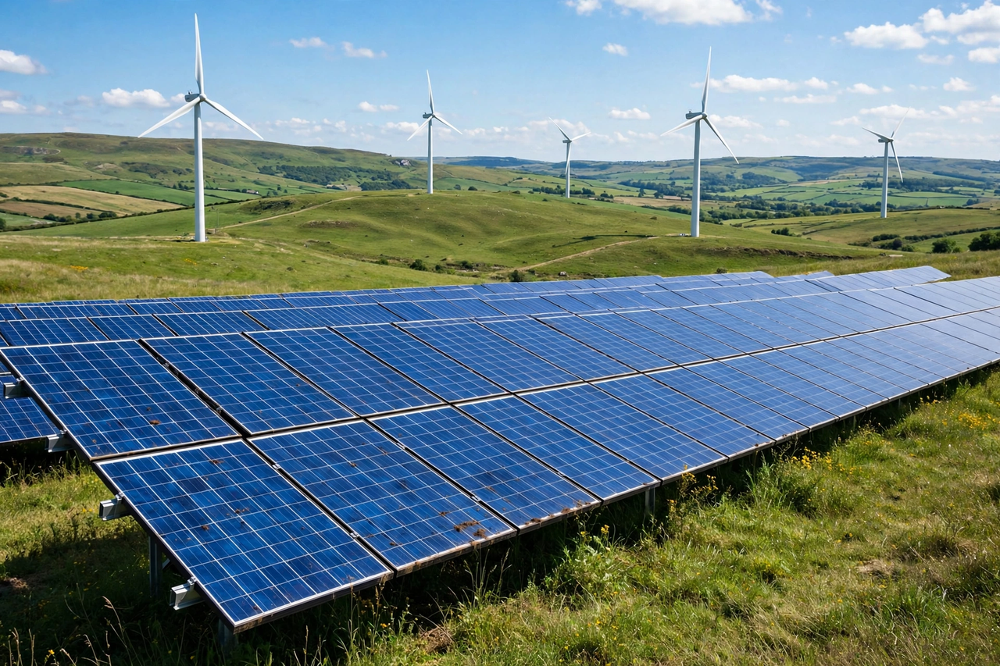

Renewable energy

[Image: Rows of solar panels in front of wind turbines on green hills under a blue sky]Renewable energy is energy from sources that are naturally replenished on a human timescale, such as sunlight, wind, rain, tides, waves and geothermal heat. It contrasts with fossil fuels, which are finite and emit carbon dioxide when burned.
Renewables have grown rapidly in the 21st century — led by solar photovoltaics and wind — as costs fell sharply, and they account for roughly a third of global electricity generation in recent years. Hydropower remains the largest single renewable source of electricity.
Technologies
Solar PV, onshore and offshore wind, hydroelectricity, geothermal, biomass and emerging ocean energies each suit different geographies. Storage (especially batteries), grids and demand management are needed to match variable solar and wind output.
Drivers
Climate-change mitigation is the principal driver, alongside energy security and air quality; the transition's economics now often favour new renewables over new fossil plants.